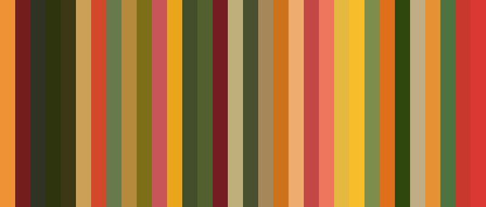

Rendu exercice no. 03
Collaborateurs :
Thanina IMAZATENE
Sandrine BIDAN
YASSINE EL ARRAS
Cliquez ici pour aller vers la visualisation et trie des images par leur couleur
Macroanalyse d'images de fruits

Colored scatterplot
Circular Dendrogram
Diagramme réseau force-directed